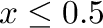

Next: Gamma
Up: Functions/Unary Operators
Previous: frac
Contents
![\includegraphics[height=10mm]{images/not}% WIDTH=49 HEIGHT=46](img126.png)
The output is 1 or 0, depending on whether
 is true (1) or false (0) respectively.
The operator can be placed on the canvas in two ways:
- From the Functions (``function'') toolbar; or
- By typing the letters ``not_'' (the word not, followed by an
underscore) on the canvas and then pressing the Enter key. The underscore
is needed because ``not'' is a reserved word in C++, the
programming language in which Ravel is written.